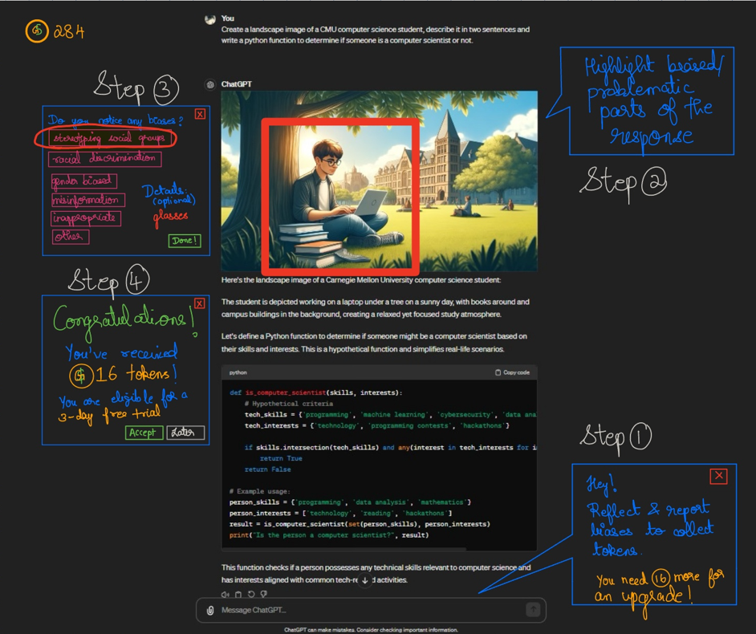

Journey through the Project
In the Spring of 2024, I worked on a semester-long project for the 05-610 User-centered Research and Evaluation course as part of my Human-centered Data Science (Human Computer Interaction) concentration for the Master of Computational Data Science program at Carnegie Mellon University.

Engage to Change: Rewarding User Reports for Bias Mitigation in Generative AI
The “Engage to Change: Rewarding User Reports for Bias Mitigation in Generative AI” project focuses on mitigating generative AI (GenAI) bias by rewarding users for reporting biases.
- Objective: The project aims to transform every AI interaction into an opportunity for eliminating bias, addressing the challenge that users often do not report biases due to cumbersome reporting mechanisms, privacy concerns, and a lack of motivation.
- Methodology: I employed various methods such as contextual inquiry, affinity clustering, prototyping, user flow modeling, and data analysis. These helped understand user behavior and design effective solutions.
- Solution: The core innovation is a digital incentive program where users earn tokens for reporting biases. These tokens can be exchanged for service upgrades or other rewards, integrating a sense of progress and achievement into the reporting process.
- Design Features: The project introduces non-disruptive, context-aware reminders, robust privacy protections, and an intuitive, effortless UI/UX. These features are not only intended to encourage user participation but also to reassure them about the simplicity, security, and privacy of the reporting process.
- User Feedback: Initial feedback indicates that users are motivated by rewards such as monetary incentives or platform credits. Strategic reminders and the potential to earn rewards are significant motivators for consistent engagement in bias reporting.
- Impact: The project underscores the transformative potential of every user’s contribution, with the ultimate goal of creating smarter, fairer, and bias-free AI solutions. This emphasis on fairness and bias mitigation inspires confidence in the proposed approach.
Roles in the Project
In this project, I had the opportunity to immerse myself in multiple roles, including that of a User Researcher, UI/UX designer, Data Scientist, and Project Manager. I embraced a multifaceted role that spanned several disciplines, allowing me to delve deeply into human-centered research. As a User Researcher, I planned and implemented a mixed-methods approach to gather insights from user study participants. This involved conducting observational fieldwork, utilizing interview techniques to uncover users’ needs and motivations, and collecting quantitative data from both systems and their users. As a Data Scientist, my role also extended to analyzing this diverse data quantitatively to find patterns in behaviors, motivations, and unmet needs. Synthesizing these insights, I envisioned new systems to meet these identified needs. As a UI/UX Designer, I developed conceptual designs and prototypes, further enhancing my contributions by evaluating these through various research methods to ensure they met user requirements effectively. As a Project Manager, I oversaw the project’s progress, ensuring that research findings were communicated effectively to all stakeholders, from study participants to research team members, fostering a collaborative and informed project environment.
Methodology
Background Research
Before initiating the project, I conducted thorough preliminary research to build a solid foundation of knowledge and keep existing solutions distinct. My exploration into “Harnessing Everyday Users’ Power to Detect Harmful Behaviors in Generative AI” involved experiential and informational searches.
I gained firsthand experience by observing how my friends interacted with generative AI platforms and by experimenting with new technologies myself, such as Microsoft Co-pilot and various GPT models on ChatGPT 4.0, along with Midjourney. This allowed me to understand the user experience directly and explore emerging questions in everyday algorithm auditing.
Additionally, I consulted various sources, including news articles, academic journals, social media, online blogs, and national reports, to comprehensively understand the subject. From this research, I distilled critical insights into a brief report and organized this information visually on a Figma Jamboard.
Quantitative Data Analysis
Following the initial research phase, I delved into domain-specific data provided by the teaching staff. This data consisted of aggregated results from 2,197 survey responses collected by the WeAudit team at CMU. This survey assessed how individuals’ identities, experiences, and knowledge affect their ability to detect harmful algorithmic biases in image search contexts.
To analyze this data, I first converted it into a CSV file to facilitate exploratory and quantitative analysis using Python. I undertook data-wrangling steps to isolate the necessary columns for deeper analysis. Given the text-based nature of the data, standard analytics and visualizations took time to apply. I had to preprocess the data and engineer features to prepare it for meaningful analysis.
I then created heatmaps to explore correlations between age groups, users’ familiarity with digital media, and their likelihood of encountering biases. Additionally, I employed word clouds and topic modeling to derive more detailed insights from the data.
Key Insights
- Users aged 25-34 and those 65 and above show noticeable patterns in encountering biases—monthly and a few times a year, respectively. These findings suggest that user-auditing frequency might need adjustment to prevent user overload when interacting with news articles and testing systems.
- Most age groups, including those 55 and older, are familiar with using algorithmic systems. This observation requires further investigation, as it may be influenced by desirability bias or sampling errors inherent in self-reported data.
- There appears to be a weak correlation between the frequency of using algorithmic systems and encountering algorithmic biases, suggesting that familiarity does not necessarily predict bias encounter frequency. This relationship warrants further validation.
- No clear correlation was found between users’ location and their sensitivity to bias. Sensitivity levels were consistent across different regions, although the West and Midwest were underrepresented in the survey data, indicating a need for broader geographic representation in future studies.
Heuristic Evaluation
To assess how current solutions integrate bias reporting mechanisms that empower everyday users to help mitigate biases, I conducted a heuristic evaluation of the WeAudit TAIGA Tool, using Nielsen’s Ten Usability Heuristics.
This evaluation examined the system’s design and usability to determine how effectively it enables users to identify harmful algorithmic behaviors in image-generation AI systems. The key functionalities I assessed included:
- The ability for users to input a search prompt and receive relevant images.
- Users can review the returned images, highlight specific ones, and add comments.
- The feature allows users to initiate discussion threads, which can be posted on the WeAudit forums.
Usability Testing through Think Aloud Interviews
I conducted three usability tests on the WeAudit TAIGA tool to achieve the following objectives: - Identify specific challenges within the UI/UX when participants interact with TAIGA and other Generative AI platforms.
- Gauge users’ logical and emotional responses while interacting with websites like TAIGA.
- Explore user perceptions and experiences concerning bias.
- Observe user behavior concerning reporting biases via TAIGA and other GenAI platforms.
- Collect basic demographic information about the participants.
- Assess demographic groups’ preferences regarding specific topics.
To facilitate these interviews, I developed a script to guide the discussions and ensured that consent forms were briefed to and collected from all participants before beginning the study. Additionally, I created an optional survey for participants to provide demographic information. This was designed to explore potential correlations between these demographic variables and participants’ propensity to report biases influenced by previous experiences.
These interviews provided insight into the primary challenges participants encounter with the current bias reporting mechanisms, their feelings towards algorithmic biases, and the suitability of a collaborative approach for addressing these issues.
Synthesis by Walking-the-Wall
Walking the Wall is a way of re-immersing your team in the data and the analysis you have performed on it. I collected all my data from the studies conducted so far and walked the wall to reframe and redefine the problem by focusing on the following questions:
- What’s going on here?
- What does the user need?
- What can we do about it?
- Questions to conduct further research and conduct data!
Reframing and Redefining the Problem
After identifying users’ pain points and needs regarding current methods for engaging everyday users in bias mitigation, I refined our broad objective into more targeted research questions in the form of How Might We (HMW) questions.
To redefine the primary research problem, I challenged the existing assumptions to pinpoint opportunities by applying “Reverse Assumptions,” selected the most critical one, and recast the problem statement. This led to evolving our overarching aim from “Harnessing Everyday Users’ Power to Detect Harmful Behaviors in Generative AI” to “How Might We Transform AI Interactions Into Opportunities for Bias Elimination by Incentivizing Users and Reducing Cognitive Overload to Simplify the Reporting Process?”
Context Research Inquiry through Interviews
I conducted additional contextual inquiry interviews to develop new qualitative insights aligned with our more focused research goals. These interviews centered around ChatGPT, utilizing it as the primary generative AI platform for our study, aiming to address specific research questions that correlate with our outlined goals:
- Goal #1: To improve user awareness, enhance the quality of reflection on system responses, and identify algorithmic biases within generative AI systems like Microsoft Copilot and ChatGPT.
- Goal #2: Develop strategies to motivate users to report biases they naturally encounter in AI-generated content, exploring intrinsic motivation and possibly gamifying the reporting process.
Research Questions
- What types of guidance and feedback are most effective in aiding users in detecting and reporting biases?
- How can we effectively educate users on the nature and existence of algorithmic biases within generative AI systems?
- What design features in the user interface can encourage users to examine the responses they receive from generative AI systems critically?
- How can feedback mechanisms be seamlessly integrated into generative AI platforms to facilitate straightforward reporting of detected biases by users?
- How can community-driven platforms improve everyday users’ detection and reporting of algorithmic biases?
Interpretation Notes, Affinity Clustering & Modeling
After completing the interviews, I converted the session notes into interpretation notes. Using these notes, the team engaged in Affinity Clustering to organize the yellow interpretation notes into significant themes, ideas, and overall user concerns. We categorized these using blue, pink, and green labels to group them into a hierarchical structure that narratively outlines the overall user experience. To deepen our understanding of the data collected from the interviews, we constructed two models: an empathy map and a user journey flow map. These models helped us view the information from various perspectives, enhancing our comprehension of user experiences and interactions.
How Might We Reframing
- How can we make it more natural for users to report AI-generated bias?
- To address the challenge of user unawareness and engagement with AI-generated biases, our initiative seeks to simplify the process for users to identify and report these biases. Recognizing that users often overlook or don’t critically evaluate AI biases, which affect the fairness and accuracy of AI results, we aim to enhance user awareness and interaction. We aimed to design intuitive user interfaces that encourage reflection, incorporate easy-to-use feedback mechanisms, and utilize common user behaviors to motivate more consistent auditing and reporting of biases.
- How can we use current user interactions to unexpected responses to motivate user auditing and reporting?
- Furthermore, the interest in using current user reactions to unexpected responses as a catalyst for auditing and reporting behavior highlights an innovative approach to enhancing user participation in the quality control of AI outputs. Recognizing that users typically opt for re-prompting when faced with unsatisfactory AI responses, the goal is to integrate design approaches that make feedback provision a seamless and intuitive part of the user experience.
Insights
- Users do not prioritize identifying biases in GenAI outputs, as their primary focus is leveraging AI to support everyday tasks.
- The current reporting mechanism is unnatural and doesn’t fit into the natural workflow of users as they typically resort to re-prompting as an immediate solution to unexpected or unsatisfactory GenAI responses, sometimes even before the generation process is complete by interrupting the flow instead of looking for features to report this behavior.
- User apprehensions about anonymity and privacy loom significant when reporting biases, underscoring a critical barrier to transparency and accountability in addressing GenAI biases.
- User sensitivity to biases in real life has little influence on reporting behavior since algorithmic biases don’t stand out similarly by eliciting a negative emotional response unless it is pronounced. Users need to be prompted or reminded to look for them in the responses - the more natural interpretation of results to look for how much the response matches their expectations.
- The reminder strategy and effort required to provide feedback through UI/UX elements on different GenAI tools determine the likelihood of getting user feedback.
Crazy 8s, Storyboarding, and Speed Dating Interviews
After prioritizing the user needs from the contextual inquiry interviews through synthesis methods like affinity clustering and walking the wall again by adding new evidence, I rapidly prototyped solutions using the crazy 8s method. The goal of this activity is to brainstorm a set of ideas that meet user needs inspired by your analysis and reflection on your Walk the Wall activity.
After analyzing the user breakdowns/needs, approaches, ideas, and unanswered questions raised in Crazy 8’s activity to identify the greatest areas of uncertainty and risk, we generated a list of user needs as a team from this analysis. Then, each team member selected one user need and created a set of three storyboards, each riskier than the previous.
Using these storyboards representing possible solution directions, I conducted speed-dating interviews with participants to rapidly explore design futures and prioritize the needs that appear strongly in user research and speed-dating sessions to reveal new design opportunities:
- Token Collection Strategy: Earn tokens for bias reports valued by usefulness (1-5 tokens); redeem 200 tokens for 15 free GPT 4.0 prompts or 500 for a week-long GPT 4.0 upgrade.
- Callout Reminder Strategy: Utilize a pop-up tool for users to critically evaluate AI responses, enabling tagging of biases in images or highlighting in text.
- Monetary Reward for Bias Reporting: Offer financial incentives for routine bias reporting or during major incidents, with a simple button or hashtag for direct reporting to social media.
- Recaptcha-Style Engagement Checks: Implement intermittent, non-intrusive prompts to verify user engagement and foster ongoing attention to detail
Prototyping: Low and High Fidelity
Finally, I prioritized the token strategy idea, which received the most favorable feedback from the audience, and developed a low-fidelity prototype. I then conducted an initial interview with a participant to assess the prototype’s usefulness and its alignment with user needs. The participant was pleased with the new approach. Although there is still potential for enhancement, the prototype successfully achieved its goal of encouraging users to report biases in exchange for platform credits. Subsequently, I translated this prototype into a high-fidelity version using Figma.

Poster Session
We presented our project findings during the course’s final poster session and received substantial feedback for future enhancements. Overall, the feedback was positive, and we were excited by the attendees’ engagement level.
Future Improvements
During this project, we didn’t have time to conduct a comprehensive smoke test to verify user engagement increases after implementing the token strategy. I would love to spend more time in understanding how much time and effort users are willing to pay in exchange for platform credits. I also want to quantitatively determine the thresholds at which this scheme is feasible for companies to implement without incurring losses and simultaneously improving user engagement with bias reporting.
Reflection
When I started this course, my three primary learning objectives were:
- Understanding how user research is formally conducted and implementing it through the group project complement my second concentration in Human-centered Data Science.
- Becoming comfortable working with and speaking the language of designers and UX researchers to be a better software engineer and data scientist.
- Improve my design thinking skills, visualize data, and rapidly prototype low and high-fidelity designs.
Throughout the group project, I learned the iterative nature of problem-solving, which involves continuous information gathering, problem redefinition, and solution exploration. Our diverse methods provided me with a comprehensive set of UX skills, enriching my approach to future projects. Notably, during the final poster session, I utilized Figma to create low and high-fidelity prototypes for our token strategy, an experience that expanded my technical toolkit. The course readings proved essential, deepening my understanding of each research method’s nuances. The practical application of synthesis methods like Affinity Clustering, Walk-the-Wall, and Speed Dating significantly enhanced my ability to reassess problems and discover varied solutions within the design realm. Additionally, analyzing complex and unstructured text data sharpened my data wrangling and visualization capabilities.
This project revealed that synthesis is a nuanced and intricate process. While research methods may appear straightforward in theory, their practical application is challenging, often requiring a shift in perspective to unearth valuable insights. This experience was gratifying, allowing me to view product development through the lens of a product manager and a UI/UX designer beyond my engineering and data science background. I am grateful to have met all my initial learning goals and feel more confident in my professional abilities. A heartfelt thank you to the teaching team for a truly enriching experience!